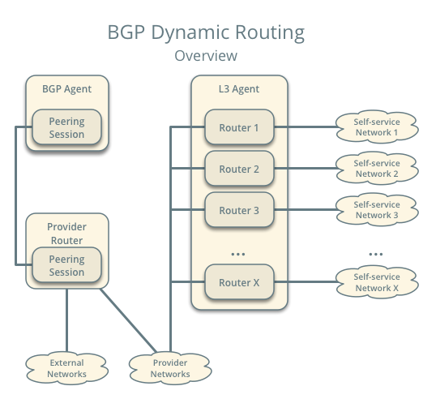
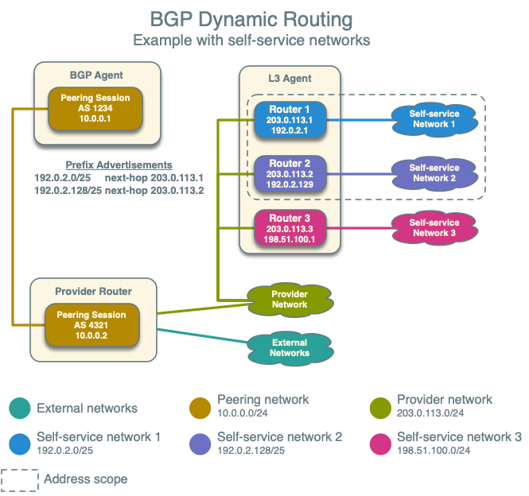
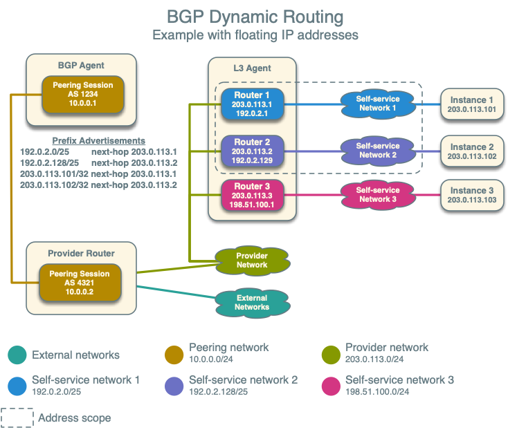

BGP Dynamic Routing¶
BGP dynamic routing enables advertisement of self-service (private) network prefixes to physical network devices that support BGP such as routers, thus removing the conventional dependency on static routes. The feature relies on address scopes and requires knowledge of their operation for proper deployment.
BGP dynamic routing consists of a service plug-in and an agent. The service plug-in implements the Networking service extension and the agent manages BGP peering sessions. A cloud administrator creates and configures a BGP speaker using the CLI or API and manually schedules it to one or more hosts running the agent. Agents can reside on hosts with or without other Networking service agents. Prefix advertisement depends on the binding of external networks to a BGP speaker and the address scope of external and internal IP address ranges or subnets.

Note
Although self-service networks generally use private IP address ranges (RFC1918) for IPv4 subnets, BGP dynamic routing can advertise any IPv4 address ranges.
Example configuration¶
The example configuration involves the following components:
One BGP agent.
One address scope containing IP address range 203.0.113.0/24 for provider networks, and IP address ranges 192.0.2.0/25 and 192.0.2.128/25 for self-service networks.
One provider network using IP address range 203.0.113.0/24.
Three self-service networks.
Self-service networks 1 and 2 use IP address ranges inside of the address scope.
Self-service network 3 uses a unique IP address range 198.51.100.0/24 to demonstrate that the BGP speaker does not advertise prefixes outside of address scopes.
Three routers. Each router connects one self-service network to the provider network.
Router 1 contains IP addresses 203.0.113.11 and 192.0.2.1
Router 2 contains IP addresses 203.0.113.12 and 192.0.2.129
Router 3 contains IP addresses 203.0.113.13 and 198.51.100.1
One preexisting peering network 10.0.0.0/24 on the host running the neutron BGP dynamic routing agent to facilitate BGP communication with its peer. 10.0.0.1 is the address for the host and 10.0.0.2 the address for the peer.
Note
The example configuration assumes sufficient knowledge about the Networking service, routing, and BGP. For basic deployment of the Networking service, consult one of the Deployment examples. For more information on BGP, see RFC 4271.
Controller node¶
In the
neutron.conffile, enable the conventional layer-3 and BGP dynamic routing service plug-ins:[DEFAULT] service_plugins = neutron_dynamic_routing.services.bgp.bgp_plugin.BgpPlugin,neutron.services.l3_router.l3_router_plugin.L3RouterPlugin
Agent nodes¶
In the
bgp_dragent.inifile:Configure the driver.
[BGP] bgp_speaker_driver = neutron_dynamic_routing.services.bgp.agent.driver.os_ken.driver.OsKenBgpDriver
Note
The agent currently only supports the os-ken BGP driver.
Configure the router ID.
[BGP] bgp_router_id = ROUTER_ID
Replace
ROUTER_IDwith a suitable unique 32-bit number, typically an IPv4 address on the host running the agent. For example, 10.0.0.1.
Verify service operation¶
Source the administrative project credentials.
Verify presence and operation of each BGP dynamic routing agent.
$ openstack network agent list --agent-type bgp +--------------------------------------+---------------------------+------------+-------------------+-------+-------+---------------------+ | ID | Agent Type | Host | Availability Zone | Alive | State | Binary | +--------------------------------------+---------------------------+------------+-------------------+-------+-------+---------------------+ | 37729181-2224-48d8-89ef-16eca8e2f77e | BGP dynamic routing agent | controller | None | :-) | UP | neutron-bgp-dragent | +--------------------------------------+---------------------------+------------+-------------------+-------+-------+---------------------+
Create the address scope and subnet pools¶
Create an address scope. The provider (external) and self-service networks must belong to the same address scope for the agent to advertise those self-service network prefixes.
$ openstack address scope create --share --ip-version 4 bgp +------------+--------------------------------------+ | Field | Value | +------------+--------------------------------------+ | headers | | | id | f71c958f-dbe8-49a2-8fb9-19c5f52a37f1 | | ip_version | 4 | | name | bgp | | project_id | 86acdbd1d72745fd8e8320edd7543400 | | shared | True | +------------+--------------------------------------+
Create subnet pools. The provider and self-service networks use different pools.
Create the provider network pool.
$ openstack subnet pool create --pool-prefix 203.0.113.0/24 \ --address-scope bgp provider +-------------------+--------------------------------------+ | Field | Value | +-------------------+--------------------------------------+ | address_scope_id | f71c958f-dbe8-49a2-8fb9-19c5f52a37f1 | | created_at | 2017-01-12T14:58:57Z | | default_prefixlen | 8 | | default_quota | None | | description | | | headers | | | id | 63532225-b9a0-445a-9935-20a15f9f68d1 | | ip_version | 4 | | is_default | False | | max_prefixlen | 32 | | min_prefixlen | 8 | | name | provider | | prefixes | 203.0.113.0/24 | | project_id | 86acdbd1d72745fd8e8320edd7543400 | | revision_number | 1 | | shared | False | | tags | [] | | updated_at | 2017-01-12T14:58:57Z | +-------------------+--------------------------------------+
Create the self-service network pool.
$ openstack subnet pool create --pool-prefix 192.0.2.0/25 \ --pool-prefix 192.0.2.128/25 --address-scope bgp \ --share selfservice +-------------------+--------------------------------------+ | Field | Value | +-------------------+--------------------------------------+ | address_scope_id | f71c958f-dbe8-49a2-8fb9-19c5f52a37f1 | | created_at | 2017-01-12T15:02:31Z | | default_prefixlen | 8 | | default_quota | None | | description | | | headers | | | id | 8d8270b1-b194-4b7e-914c-9c741dcbd49b | | ip_version | 4 | | is_default | False | | max_prefixlen | 32 | | min_prefixlen | 8 | | name | selfservice | | prefixes | 192.0.2.0/25, 192.0.2.128/25 | | project_id | 86acdbd1d72745fd8e8320edd7543400 | | revision_number | 1 | | shared | True | | tags | [] | | updated_at | 2017-01-12T15:02:31Z | +-------------------+--------------------------------------+
Create the provider and self-service networks¶
Create the provider network.
$ openstack network create provider --external --provider-physical-network \ provider --provider-network-type flat Created a new network: +---------------------------+--------------------------------------+ | Field | Value | +---------------------------+--------------------------------------+ | admin_state_up | UP | | availability_zone_hints | | | availability_zones | | | created_at | 2016-12-21T08:47:41Z | | description | | | headers | | | id | 190ca651-2ee3-4a4b-891f-dedda47974fe | | ipv4_address_scope | None | | ipv6_address_scope | None | | is_default | False | | mtu | 1450 | | name | provider | | port_security_enabled | True | | project_id | c961a8f6d3654657885226378ade8220 | | provider:network_type | flat | | provider:physical_network | provider | | provider:segmentation_id | 66 | | revision_number | 3 | | router:external | External | | shared | False | | status | ACTIVE | | subnets | | | tags | [] | | updated_at | 2016-12-21T08:47:41Z | +---------------------------+--------------------------------------+
Create a subnet on the provider network using an IP address range from the provider subnet pool.
$ openstack subnet create --subnet-pool provider \ --prefix-length 24 --gateway 203.0.113.1 --network provider \ --allocation-pool start=203.0.113.11,end=203.0.113.254 provider +-------------------+--------------------------------------+ | Field | Value | +-------------------+--------------------------------------+ | allocation_pools | 203.0.113.11-203.0.113.254 | | cidr | 203.0.113.0/24 | | created_at | 2016-03-17T23:17:16 | | description | | | dns_nameservers | | | enable_dhcp | True | | gateway_ip | 203.0.113.1 | | host_routes | | | id | 8ed65d41-2b2a-4f3a-9f92-45adb266e01a | | ip_version | 4 | | ipv6_address_mode | None | | ipv6_ra_mode | None | | name | provider | | network_id | 68ec148c-181f-4656-8334-8f4eb148689d | | project_id | b3ac05ef10bf441fbf4aa17f16ae1e6d | | segment_id | None | | service_types | | | subnetpool_id | 3771c0e7-7096-46d3-a3bd-699c58e70259 | | tags | | | updated_at | 2016-03-17T23:17:16 | +-------------------+--------------------------------------+
Note
The IP address allocation pool starting at
.11improves clarity of the diagrams. You can safely omit it.Create the self-service networks.
$ openstack network create selfservice1 Created a new network: +---------------------------+--------------------------------------+ | Field | Value | +---------------------------+--------------------------------------+ | admin_state_up | UP | | availability_zone_hints | | | availability_zones | | | created_at | 2016-12-21T08:49:38Z | | description | | | headers | | | id | 9d842606-ef3d-4160-9ed9-e03fa63aed96 | | ipv4_address_scope | None | | ipv6_address_scope | None | | mtu | 1450 | | name | selfservice1 | | port_security_enabled | True | | project_id | c961a8f6d3654657885226378ade8220 | | provider:network_type | vxlan | | provider:physical_network | None | | provider:segmentation_id | 106 | | revision_number | 3 | | router:external | Internal | | shared | False | | status | ACTIVE | | subnets | | | tags | [] | | updated_at | 2016-12-21T08:49:38Z | +---------------------------+--------------------------------------+ $ openstack network create selfservice2 Created a new network: +---------------------------+--------------------------------------+ | Field | Value | +---------------------------+--------------------------------------+ | admin_state_up | UP | | availability_zone_hints | | | availability_zones | | | created_at | 2016-12-21T08:50:05Z | | description | | | headers | | | id | f85639e1-d23f-438e-b2b1-f40570d86b1c | | ipv4_address_scope | None | | ipv6_address_scope | None | | mtu | 1450 | | name | selfservice2 | | port_security_enabled | True | | project_id | c961a8f6d3654657885226378ade8220 | | provider:network_type | vxlan | | provider:physical_network | None | | provider:segmentation_id | 21 | | revision_number | 3 | | router:external | Internal | | shared | False | | status | ACTIVE | | subnets | | | tags | [] | | updated_at | 2016-12-21T08:50:05Z | +---------------------------+--------------------------------------+ $ openstack network create selfservice3 Created a new network: +---------------------------+--------------------------------------+ | Field | Value | +---------------------------+--------------------------------------+ | admin_state_up | UP | | availability_zone_hints | | | availability_zones | | | created_at | 2016-12-21T08:50:35Z | | description | | | headers | | | id | eeccdb82-5cf4-4999-8ab3-e7dc99e7d43b | | ipv4_address_scope | None | | ipv6_address_scope | None | | mtu | 1450 | | name | selfservice3 | | port_security_enabled | True | | project_id | c961a8f6d3654657885226378ade8220 | | provider:network_type | vxlan | | provider:physical_network | None | | provider:segmentation_id | 86 | | revision_number | 3 | | router:external | Internal | | shared | False | | status | ACTIVE | | subnets | | | tags | [] | | updated_at | 2016-12-21T08:50:35Z | +---------------------------+--------------------------------------+
Create a subnet on the first two self-service networks using an IP address range from the self-service subnet pool.
$ openstack subnet create --network selfservice1 --subnet-pool selfservice \ --prefix-length 25 selfservice1 +-------------------+----------------------------------------------------+ | Field | Value | +-------------------+----------------------------------------------------+ | allocation_pools | 192.0.2.2-192.0.2.127 | | cidr | 192.0.2.0/25 | | created_at | 2016-03-17T23:20:20 | | description | | | dns_nameservers | | | enable_dhcp | True | | gateway_ip | 198.51.100.1 | | host_routes | | | id | 8edd3dc2-df40-4d71-816e-a4586d61c809 | | ip_version | 4 | | ipv6_address_mode | | | ipv6_ra_mode | | | name | selfservice1 | | network_id | be79de1e-5f56-11e6-9dfb-233e41cec48c | | project_id | b3ac05ef10bf441fbf4aa17f16ae1e6d | | revision_number | 1 | | subnetpool_id | c7e9737a-cfd3-45b5-a861-d1cee1135a92 | | tags | [] | | tenant_id | b3ac05ef10bf441fbf4aa17f16ae1e6d | | updated_at | 2016-03-17T23:20:20 | +-------------------+----------------------------------------------------+ $ openstack subnet create --network selfservice2 --subnet-pool selfservice \ --prefix-length 25 selfservice2 +-------------------+------------------------------------------------+ | Field | Value | +-------------------+------------------------------------------------+ | allocation_pools | 192.0.2.130-192.0.2.254 | | cidr | 192.0.2.128/25 | | created_at | 2016-03-17T23:20:20 | | description | | | dns_nameservers | | | enable_dhcp | True | | gateway_ip | 192.0.2.129 | | host_routes | | | id | 8edd3dc2-df40-4d71-816e-a4586d61c809 | | ip_version | 4 | | ipv6_address_mode | | | ipv6_ra_mode | | | name | selfservice2 | | network_id | c1fd9846-5f56-11e6-a8ac-0f998d9cc0a2 | | project_id | b3ac05ef10bf441fbf4aa17f16ae1e6d | | revision_number | 1 | | subnetpool_id | c7e9737a-cfd3-45b5-a861-d1cee1135a92 | | tags | [] | | tenant_id | b3ac05ef10bf441fbf4aa17f16ae1e6d | | updated_at | 2016-03-17T23:20:20 | +-------------------+------------------------------------------------+
Create a subnet on the last self-service network using an IP address range outside of the address scope.
$ openstack subnet create --network selfservice3 --prefix 198.51.100.0/24 subnet3 +-------------------+----------------------------------------------------+ | Field | Value | +-------------------+----------------------------------------------------+ | allocation_pools | 198.51.100.2-198.51.100.254 | | cidr | 198.51.100.0/24 | | created_at | 2016-03-17T23:20:20 | | description | | | dns_nameservers | | | enable_dhcp | True | | gateway_ip | 198.51.100.1 | | host_routes | | | id | cd9f9156-5f59-11e6-aeec-172ec7ee939a | | ip_version | 4 | | ipv6_address_mode | | | ipv6_ra_mode | | | name | selfservice3 | | network_id | c283dc1c-5f56-11e6-bfb6-efc30e1eb73b | | project_id | b3ac05ef10bf441fbf4aa17f16ae1e6d | | revision_number | 1 | | subnetpool_id | | | tags | [] | | tenant_id | b3ac05ef10bf441fbf4aa17f16ae1e6d | | updated_at | 2016-03-17T23:20:20 | +-------------------+----------------------------------------------------+
Create and configure the routers¶
Create the routers.
$ openstack router create router1 +-------------------------+--------------------------------------+ | Field | Value | +-------------------------+--------------------------------------+ | admin_state_up | UP | | availability_zone_hints | | | availability_zones | | | created_at | 2017-01-10T13:15:19Z | | description | | | distributed | False | | external_gateway_info | null | | flavor_id | None | | ha | False | | headers | | | id | 3f6f4ef8-63be-11e6-bbb3-2fbcef363ab8 | | name | router1 | | project_id | b3ac05ef10bf441fbf4aa17f16ae1e6d | | revision_number | 1 | | routes | | | status | ACTIVE | | tags | [] | | updated_at | 2017-01-10T13:15:19Z | +-------------------------+--------------------------------------+ $ openstack router create router2 +-------------------------+--------------------------------------+ | Field | Value | +-------------------------+--------------------------------------+ | admin_state_up | UP | | availability_zone_hints | | | availability_zones | | | created_at | 2017-01-10T13:15:19Z | | description | | | distributed | False | | external_gateway_info | null | | flavor_id | None | | ha | False | | headers | | | id | 3fd21a60-63be-11e6-9c95-5714c208c499 | | name | router2 | | project_id | b3ac05ef10bf441fbf4aa17f16ae1e6d | | revision_number | 1 | | routes | | | status | ACTIVE | | tags | [] | | updated_at | 2017-01-10T13:15:19Z | +-------------------------+--------------------------------------+ $ openstack router create router3 +-------------------------+--------------------------------------+ | Field | Value | +-------------------------+--------------------------------------+ | admin_state_up | UP | | availability_zone_hints | | | availability_zones | | | created_at | 2017-01-10T13:15:19Z | | description | | | distributed | False | | external_gateway_info | null | | flavor_id | None | | ha | False | | headers | | | id | 40069a4c-63be-11e6-9ecc-e37c1eaa7e84 | | name | router3 | | project_id | b3ac05ef10bf441fbf4aa17f16ae1e6d | | revision_number | 1 | | routes | | | status | ACTIVE | | tags | [] | | updated_at | 2017-01-10T13:15:19Z | +-------------------------+--------------------------------------+
For each router, add one self-service subnet as an interface on the router.
$ openstack router add subnet router1 selfservice1 $ openstack router add subnet router2 selfservice2 $ openstack router add subnet router3 selfservice3
Add the provider network as a gateway on each router.
$ openstack router set --external-gateway provider router1 $ openstack router set --external-gateway provider router2 $ openstack router set --external-gateway provider router3
Create and configure the BGP speaker¶
The BGP speaker advertises the next-hop IP address for eligible self-service networks and floating IP addresses for instances using those networks.
Create the BGP speaker.
$ openstack bgp speaker create --ip-version 4 \ --local-as LOCAL_AS bgpspeaker Created a new bgp_speaker: +-----------------------------------+--------------------------------------+ | Field | Value | +-----------------------------------+--------------------------------------+ | advertise_floating_ip_host_routes | True | | advertise_tenant_networks | True | | id | 5f227f14-4f46-4eca-9524-fc5a1eabc358 | | ip_version | 4 | | local_as | 1234 | | name | bgpspeaker | | networks | | | peers | | | tenant_id | b3ac05ef10bf441fbf4aa17f16ae1e6d | +-----------------------------------+--------------------------------------+
Replace
LOCAL_ASwith an appropriate local autonomous system number. The example configuration uses AS 1234.A BGP speaker requires association with a provider network to determine eligible prefixes. The association builds a list of all virtual routers with gateways on provider and self-service networks in the same address scope so the BGP speaker can advertise self-service network prefixes with the corresponding router as the next-hop IP address. Associate the BGP speaker with the provider network.
$ openstack bgp speaker add network bgpspeaker provider Added network provider to BGP speaker bgpspeaker.
Verify association of the provider network with the BGP speaker.
$ openstack bgp speaker show bgpspeaker +-----------------------------------+--------------------------------------+ | Field | Value | +-----------------------------------+--------------------------------------+ | advertise_floating_ip_host_routes | True | | advertise_tenant_networks | True | | id | 5f227f14-4f46-4eca-9524-fc5a1eabc358 | | ip_version | 4 | | local_as | 1234 | | name | bgpspeaker | | networks | 68ec148c-181f-4656-8334-8f4eb148689d | | peers | | | tenant_id | b3ac05ef10bf441fbf4aa17f16ae1e6d | +-----------------------------------+--------------------------------------+
Verify the prefixes and next-hop IP addresses that the BGP speaker advertises.
$ openstack bgp speaker list advertised routes bgpspeaker +-----------------+--------------+ | Destination | Nexthop | +-----------------+--------------+ | 192.0.2.0/25 | 203.0.113.11 | | 192.0.2.128/25 | 203.0.113.12 | +-----------------+--------------+
Create a BGP peer.
$ openstack bgp peer create --peer-ip 10.0.0.2 \ --remote-as REMOTE_AS bgppeer Created a new bgp_peer: +-----------+--------------------------------------+ | Field | Value | +-----------+--------------------------------------+ | auth_type | none | | id | 35c89ca0-ac5a-4298-a815-0b073c2362e9 | | name | bgppeer | | peer_ip | 10.0.0.2 | | remote_as | 4321 | | tenant_id | b3ac05ef10bf441fbf4aa17f16ae1e6d | +-----------+--------------------------------------+
Replace
REMOTE_ASwith an appropriate remote autonomous system number. The example configuration uses AS 4321 which triggers EBGP peering.Note
The host containing the BGP agent must have layer-3 connectivity to the provider router.
Add a BGP peer to the BGP speaker.
$ openstack bgp speaker add peer bgpspeaker bgppeer Added BGP peer bgppeer to BGP speaker bgpspeaker.
Verify addition of the BGP peer to the BGP speaker.
$ openstack bgp speaker show bgpspeaker +-----------------------------------+--------------------------------------+ | Field | Value | +-----------------------------------+--------------------------------------+ | advertise_floating_ip_host_routes | True | | advertise_tenant_networks | True | | id | 5f227f14-4f46-4eca-9524-fc5a1eabc358 | | ip_version | 4 | | local_as | 1234 | | name | bgpspeaker | | networks | 68ec148c-181f-4656-8334-8f4eb148689d | | peers | 35c89ca0-ac5a-4298-a815-0b073c2362e9 | | tenant_id | b3ac05ef10bf441fbf4aa17f16ae1e6d | +-----------------------------------+--------------------------------------+
Note
After creating a peering session, you cannot change the local or remote autonomous system numbers.
Schedule the BGP speaker to an agent¶
Unlike most agents, BGP speakers require manual scheduling to an agent. BGP speakers only form peering sessions and begin prefix advertisement after scheduling to an agent. Schedule the BGP speaker to agent
37729181-2224-48d8-89ef-16eca8e2f77e.$ openstack bgp dragent add speaker 37729181-2224-48d8-89ef-16eca8e2f77e bgpspeaker Associated BGP speaker bgpspeaker to the Dynamic Routing agent.
Verify scheduling of the BGP speaker to the agent.
$ openstack bgp dragent list --bgp-speaker bgpspeaker +--------------------------------------+------------+-------+-------+ | ID | Host | State | Alive | +--------------------------------------+------------+-------+-------+ | 37729181-2224-48d8-89ef-16eca8e2f77e | controller | True | :-) | +--------------------------------------+------------+-------+-------+
Prefix advertisement¶
BGP dynamic routing advertises prefixes for self-service networks and host routes for floating IP addresses.
Advertisement of a self-service network requires satisfying the following conditions:
The external and self-service network reside in the same address scope.
The router contains an interface on the self-service subnet and a gateway on the external network.
The BGP speaker associates with the external network that provides a gateway on the router.
The BGP speaker has the
advertise_tenant_networksattribute set toTrue.

Advertisement of a floating IP address requires satisfying the following conditions:
The router with the floating IP address binding contains a gateway on an external network with the BGP speaker association.
The BGP speaker has the
advertise_floating_ip_host_routesattribute set toTrue.

Operation with Distributed Virtual Routers (DVR)¶
For both floating IP and IPv4 fixed IP addresses, the BGP speaker advertises the floating IP agent gateway on the corresponding compute node as the next-hop IP address. When using IPv6 fixed IP addresses, the BGP speaker advertises the DVR SNAT node as the next-hop IP address.
For example, consider the following components:
A provider network using IP address range 203.0.113.0/24, and supporting floating IP addresses 203.0.113.101, 203.0.113.102, and 203.0.113.103.
A self-service network using IP address range 198.51.100.0/24.
Instances with fixed IP’s 198.51.100.11, 198.51.100.12, and 198.51.100.13
The SNAT gateway resides on 203.0.113.11.
The floating IP agent gateways (one per compute node) reside on 203.0.113.12, 203.0.113.13, and 203.0.113.14.
Three instances, one per compute node, each with a floating IP address.
advertise_tenant_networksis set toFalseon the BGP speaker
$ openstack bgp speaker list advertised routes bgpspeaker
+------------------+--------------+
| Destination | Nexthop |
+------------------+--------------+
| 198.51.100.0/24 | 203.0.113.11 |
| 203.0.113.101/32 | 203.0.113.12 |
| 203.0.113.102/32 | 203.0.113.13 |
| 203.0.113.103/32 | 203.0.113.14 |
+------------------+--------------+
When floating IP’s are disassociated and advertise_tenant_networks is
set to True, the following routes will be advertised:
$ openstack bgp speaker list advertised routes bgpspeaker
+------------------+--------------+
| Destination | Nexthop |
+------------------+--------------+
| 198.51.100.0/24 | 203.0.113.11 |
| 198.51.100.11/32 | 203.0.113.12 |
| 198.51.100.12/32 | 203.0.113.13 |
| 198.51.100.13/32 | 203.0.113.14 |
+------------------+--------------+
You can also identify floating IP agent gateways in your environment to assist with verifying operation of the BGP speaker.
$ openstack port list --device-owner network:floatingip_agent_gateway
+--------------------------------------+------+-------------------+--------------------------------------------------------------------------------------------------------+
| ID | Name | MAC Address | Fixed IP Addresses |
+--------------------------------------+------+-------------------+--------------------------------------------------------------------------------------------------------+
| 87cf2970-4970-462e-939e-00e808295dfa | | fa:16:3e:7c:68:e3 | ip_address='203.0.113.12', subnet_id='8ed65d41-2b2a-4f3a-9f92-45adb266e01a' |
| 8d218440-0d2e-49d0-8a7b-3266a6146dc1 | | fa:16:3e:9d:78:cf | ip_address='203.0.113.13', subnet_id='8ed65d41-2b2a-4f3a-9f92-45adb266e01a' |
| 87cf2970-4970-462e-939e-00e802281dfa | | fa:16:3e:6b:18:e0 | ip_address='203.0.113.14', subnet_id='8ed65d41-2b2a-4f3a-9f92-45adb266e01a' |
+--------------------------------------+------+-------------------+--------------------------------------------------------------------------------------------------------+
IPv6¶
BGP dynamic routing supports peering via IPv6 and advertising IPv6 prefixes.
To enable peering via IPv6, create a BGP peer and use an IPv6 address for
peer_ip.To enable advertising IPv6 prefixes, create an address scope with
ip_version=6and a BGP speaker withip_version=6.
Note
DVR lacks support for routing directly to a fixed IPv6 address via the floating IP agent gateway port and thus prevents the BGP speaker from advertising /128 host routes.
High availability¶
BGP dynamic routing supports scheduling a BGP speaker to multiple agents which effectively multiplies prefix advertisements to the same peer. If an agent fails, the peer continues to receive advertisements from one or more operational agents.
Show available dynamic routing agents.
$ openstack network agent list --agent-type bgp +--------------------------------------+---------------------------+------- --+-------------------+-------+-------+---------------------------+ | ID | Agent Type | Host | Availability Zone | Alive | State | Binary | +--------------------------------------+---------------------------+----------+-------------------+-------+-------+---------------------------+ | 37729181-2224-48d8-89ef-16eca8e2f77e | BGP dynamic routing agent | bgp-ha1 | None | :-) | UP | neutron-bgp-dragent | | 1a2d33bb-9321-30a2-76ab-22eff3d2f56a | BGP dynamic routing agent | bgp-ha2 | None | :-) | UP | neutron-bgp-dragent | +--------------------------------------+---------------------------+----------+-------------------+-------+-------+---------------------------+
Schedule BGP speaker to multiple agents.
$ openstack bgp dragent add speaker 37729181-2224-48d8-89ef-16eca8e2f77e bgpspeaker Associated BGP speaker bgpspeaker to the Dynamic Routing agent. $ openstack bgp dragent add speaker 1a2d33bb-9321-30a2-76ab-22eff3d2f56a bgpspeaker Associated BGP speaker bgpspeaker to the Dynamic Routing agent. $ openstack bgp dragent list --bgp-speaker bgpspeaker +--------------------------------------+---------+-------+-------+ | ID | Host | State | Alive | +--------------------------------------+---------+-------+-------+ | 37729181-2224-48d8-89ef-16eca8e2f77e | bgp-ha1 | True | :-) | | 1a2d33bb-9321-30a2-76ab-22eff3d2f56a | bgp-ha2 | True | :-) | +--------------------------------------+---------+-------+-------+